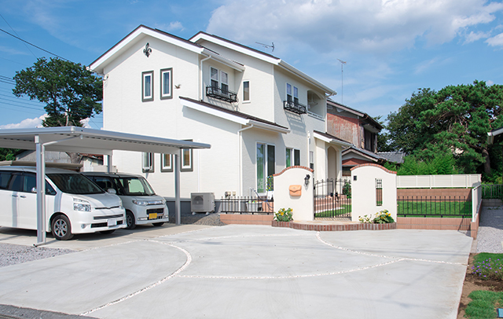
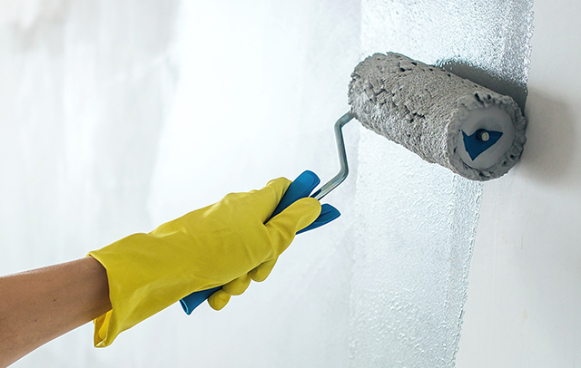

- TOP
- 外壁塗り替えのタイミング
Timing
想像以上のスピードで進む塗膜の劣化
新築から10年だけど見た目は問題なさそうだから、あと5年は外壁の塗り替えは必要ないかも──それが本当ならよいのですが、実際のところは建物を厳密に調べてみないとはっきりしたことは判断できません。実際、塗膜は年がら年中紫外線や風雨などにさらされ想像以上に劣化しているからです。たとえ見た目にそれほど変化がなくとも、新築や前回の塗り替えから10年を経過していたら用心が必要。まずは、日野・八王子で外壁塗装を手がけるペイントワークスに現地調査をご依頼ください。
新築から10年ごとが
一つの「目安」？

一般に外壁の塗り替えは10～15年ごとの実施が推奨されています。ただし、使用する塗料の性能が低い場合や、厳しい気象条件の下では塗装の持ちが5年程度ということも。確かに高価なハイグレード塗料を用いれば15年程度の耐久性が期待できるかもしれませんが、建物を健全に保とうとすれば、通常は新築から10年ごとに塗り替えるべきでしょう。大事なのはその節目に近づいてきたら外壁部分をこまめにチェックすること。もし、塗装面の剥がれやひび割れが顕著になっていたり、付着した泥汚れなどが落ちにくくなっていたり、藻や苔が繁茂していたりしていたら、10年未満でも外壁の塗り替え時期に来ていると言ってよいでしょう。
このサインが現れたら
塗り替え時期
外壁や屋根に下記に示すような劣化のサインが見られたら、塗り替え・修繕を検討するタイミングです。項目が半分以上当てはまっていたら、そろそろ塗り替えの時期。お早めにご相談ください。
外壁
| 状態 |
|---|
|
屋根
| 状態 |
|---|
|
小危険度大
シーリング
| 状態 |
|---|
|
小危険度大
※シーリングとは雨水が浸入しないようにサッシ周りや目地の隙間を密封する素材です。
鉄部
| 状態 |
|---|
|
小危険度大
防水部
| 状態 |
|---|
|
小危険度大
木部
| 状態 |
|---|
|
小危険度大
塗り替えを行わないと
どうなる？

紫外線や風雨、汚れから家を守ってきた塗膜が劣化し、本来の役割を果たさなくなると、そうしたダメージを建物がまともに受けることになり、家の寿命を著しく縮めます。しかし、耐久性という点では、まず懸念されるのは防水性の低下です。塗膜によるコーティングが雨や湿気の侵入を防げなくなるので、外壁本体はもちろん、建物を構成している柱や梁といった部材に浸透し、これらを急速に腐食させます。すると家の構造が弱体化し設計時の耐震性や強度が保てなくなります。地震や風水害など激甚な災害では倒壊の危険性も高まるでしょう。しかし、腐食が進んでいるとすれば、いざ修繕しようにも莫大な出費がかさむ可能性もあります。これなら10年ごとにしっかり塗り替えを実施していたほうがランニングコストははるかに安上がりかもしれません。